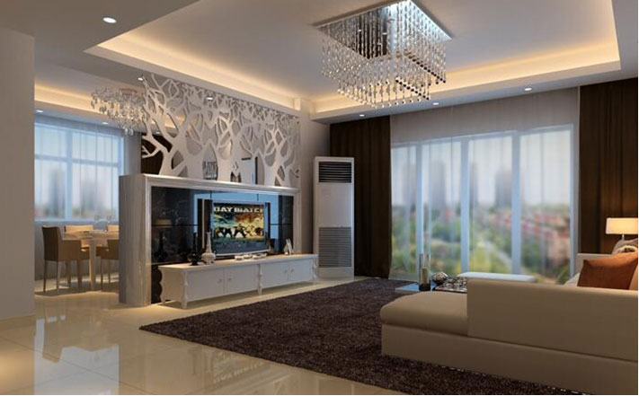

更新时间：2017-09-14 18:00
我们已经知道在现代的房地产楼盘修建之前就会对原 有的框架面积进行敲定，房子的室内面积大致可以分为几 个区段，小户型房子面积为45-75平米，中户型为75-130 平米，而大户型面积在150平米甚至以上。
面积的大小在空间利用和分配方面有着非常直接的联 系，例如小户型的房子建议选用简约式风格，提倡选择奢 华类的装修方案。
简约式装修因为本身的颜色设计主体偏向于浅色 调，在白色的运用上颇具造诣，所以说它可以使室内空间 的光线亮丽度提升，而且利用几何设计形的设计可以将线 条具有强烈的视觉冲击感，白色作为百搭色中重要的成 分，它的出现能够为室内造成空旷的感觉，以弥补室内面 积小的缺陷和限制。
大户型房子不提倡选择或许单一的设计方案，在室内 面积宽阔的前提下使用过于单一的室内设计不仅起不到好 的效果，还会显得特别单调枯燥，尤其是使用白色会使原 来就宽广的室内空间变得很飘，失去原有的设计主题感 觉。
简约式风格在设计的时候面对户型的不同也会出现不 同的变化，主要在于家具功能性的设计以及黑灰色调的使 用量，为了防止室内空间或许飘，会选择黑子的格子地砖 或者木质地板作为气氛压制，在客厅地面铺设深灰色的羊 绒地毯等材料来缓解室内气氛。